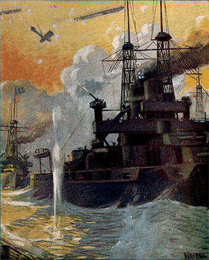
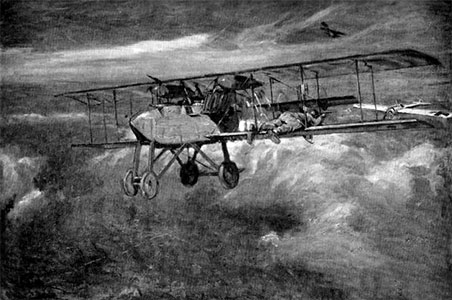
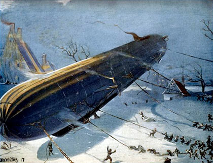

Aircraft and Submarines
The Story of the Invention, Development, and Present-Day Uses of War's Newest Weapons
By Willis J. Abbot
Preface
Not since gunpowder was first employed in warfare has so revolutionary a contribution to the science of slaughtering men been made as by the perfection of aircraft and submarines. The former have had their first employment in this world-wide war of the nations. The latter, though in the experimental stage as far back as the American Revolution, have in this bitter contest been for the first time brought to so practical a stage of development as to exert a really appreciable influence on the outcome of the struggle.
Comparatively few people appreciate how the thought of navigating the air's dizziest heights and the sea's gloomiest depths has obsessed the minds of inventors. From the earliest days of history men have grappled with the problem, yet it is only within two hundred years for aircraft and one hundred for submarines that any really intelligent start has been made upon its solution. The men who really gave practical effect to the vague theories which others set up—in aircraft the Wrights, Santos-Dumont, and Count Zeppelin; in submarines Lake and Holland—are either still living, or have died so recently that their memory is still fresh in the minds of all.
In this book the author has sketched swiftly the slow stages by which in each of these fields of activity success has been attained. He has collated from the immense (p. iv) mass of records of the activities of both submarines and aircraft enough interesting data to show the degree of perfection and practicability to which both have been brought. And he has outlined so far as possible from existing conditions the possibilities of future usefulness in fields other than those of war of these new devices.
The most serious difficulty encountered in dealing with the present state and future development of aircraft is the rapidity with which that development proceeds. Before a Congressional Committee last January an official testified that grave delay in the manufacture of airplanes for the army had been caused by the fact that types adopted a scant three months before had become obsolete, because of experience on the European battlefields, and later inventions before the first machines could be completed. There may be exaggeration in the statement but it is largely true. Neither the machines nor the tactics employed at the beginning of the war were in use in its fourth year. The course of this evolution, with its reasons, are described in this volume.
Opportunities for the peaceful use of airplanes are beginning to suggest themselves daily. After the main body of this book was in type the Postmaster-General of the United States called for bids for an aërial mail service between New York and Washington—an act urged upon the Government in this volume. That service contemplates a swift carriage of first-class mail at an enhanced price—the tentative schedule being three hours, and a postage fee of twenty-five cents an ounce. There can be no doubt of the success of the service, its value to the public, and its possibilities of revenue to the post-office. Once its usefulness is established it will be extended to routes of similar length, such as New York (p. v) and Boston, New York and Buffalo, or New York and Pittsburgh. The mind suggests no limit to the extension of aërial service, both postal and passenger, in the years of industrial activity that shall follow the war.
In the preparation of this book the author has made use of many records of personal experiences of those who have dared the air's high altitudes and the sea's stilly depths. For permission to use certain of these he wishes to express his thanks to the Century Co., for extracts from My Airships by Santos-Dumont; to Doubleday, Page & Co., for extracts from Flying for France, by James R. McConnell; to Charles Scribner's Sons, for material drawn from With the French Flying Corps, by Carroll Dana Winslow; to Collier's Weekly, for certain extracts from interviews with Wilbur Wright; to McClure's Magazine, for the account of Mr. Ray Stannard Baker's trip in a Lake submarine; to Hearst's International Library, and to the Scientific American, for the use of several illustrations.